interactive demo · everything here is rendered live
A real-time city engine: generated cities with living traffic, people,
interactive water, a full day/night cycle, and art styles you switch on the fly.
Play with it right here, then scroll down for videos and feature stills. Nothing
below is a drawn illustration — every frame is the engine running.
Play with it
It's running live below — works on your phone too. Tap the buttons to
change the city, art style, time of day and camera; drag the water to ripple it.
👆 Tap the buttons to change city, art style & time of dayDrag the water to ripple iton a computer: C city · G shuffle · T time
· 0/7/8 style · 4/5/6 camera
If you only watch one thing: the city living through day into night, then
zooming out into pixel art (cycling Game Boy → 8-bit → 16-bit → modern), gliding back
in to a smooth cartoon close-up. The art style follows the camera.
One continuous shot — water ripples, a slow orbit, the sun crossing the
sky, and the full range of art styles.
Every city from one number
Each city is generated from a single seed — same rules, different
character. Recognizable landmarks included. New cities, real or invented, are one
setting away.
Manhattan, Paris and Neo-Tokyo at dusk — generated, not hand-placed.
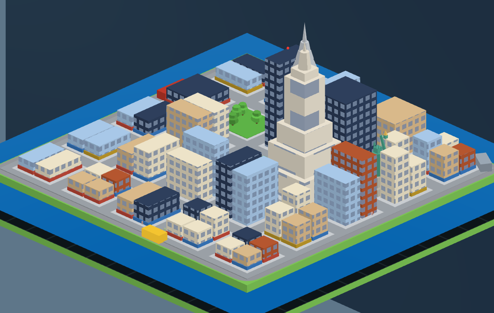
Manhattan — the Empire State and Chrysler rise from a dense core;
Lady Liberty sits at the water's edge.
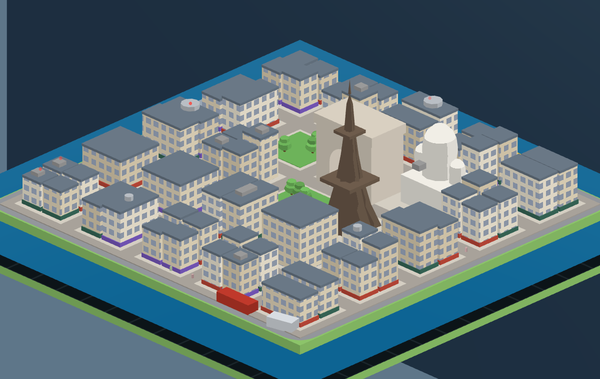
Paris — uniform Haussmann rooftops under an iron tower; a different
city from the very same generator.
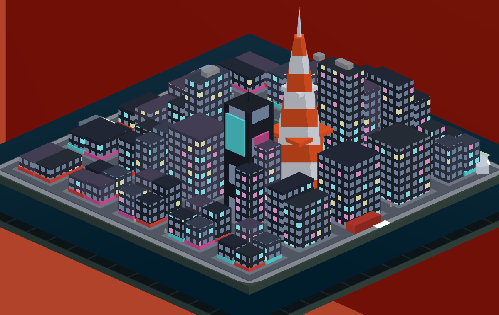
Neo-Tokyo — at night the tower glows orange and the windows go
neon. A city that never sleeps.
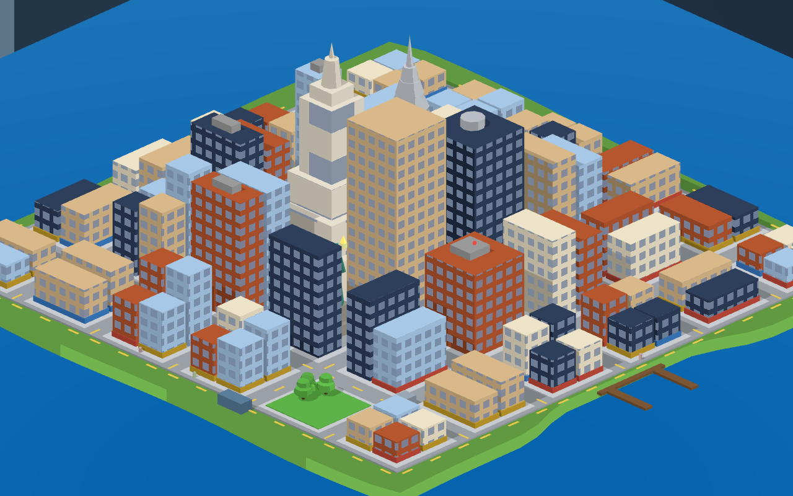
On the water — every city sits on a real coastline now: an irregular island
in open ocean with a harbor and docks, streets laid through the blocks with traffic driving
them. The water still ripples when you touch it.Living water — boats run the harbor and the open sea, and they carve real
wakes: each one stirs the actual water simulation, the same physics that ripples when you touch
it. Fish breach, gulls skim the coast, and at night the boats light up.
Weather & atmosphere
Live weather, layered on the day/night cycle. Rain doesn't just fall —
it ripples the actual water. Fog rolls in tinted by the time of day; snow dusts the
rooftops. Every kind composes with every art style.
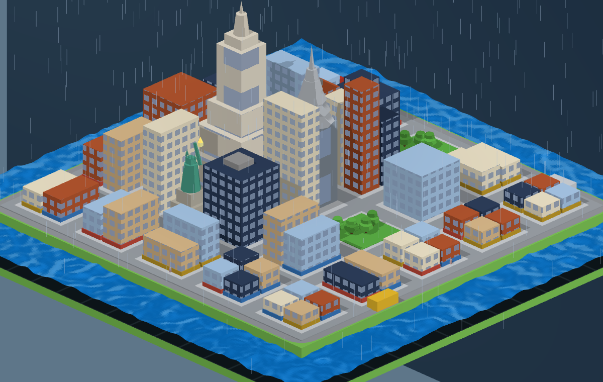
Rain — and the bay genuinely churns; the drops hit the real
water simulation.
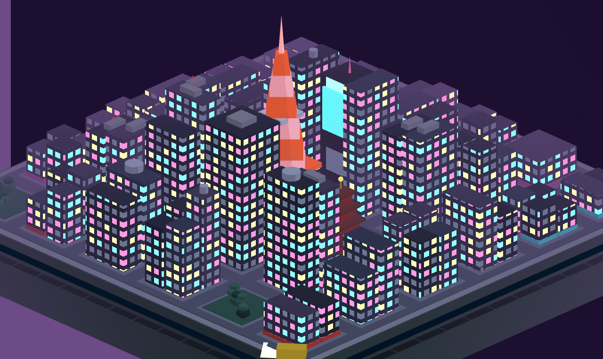
Fog at night — neon and the tower glow through the haze.
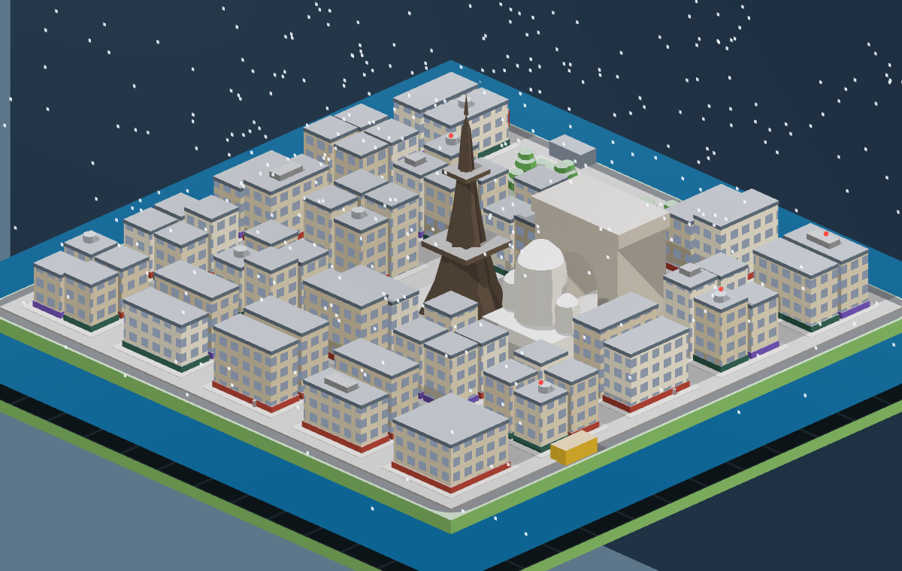
Snow — settling white on the rooftops as it falls.
Step inside — the office dive
Click a building and the camera flies through its window into a warm office —
one continuous move. The whole city stays alive outside the glass: day and night, weather,
clouds, lit windows. And the room is yours: use the laptop, hop to another city from the
phone, and there's a cat that wakes with the sun and curls up to sleep at night.
Press Esc (or tap Exit) to fly back out.
Dive in: pet the cat, feed the fish, hop cities from the phone, weather rolls
across the skyline, day turns to night and the tank lights the room — one continuous take,
all live engine.
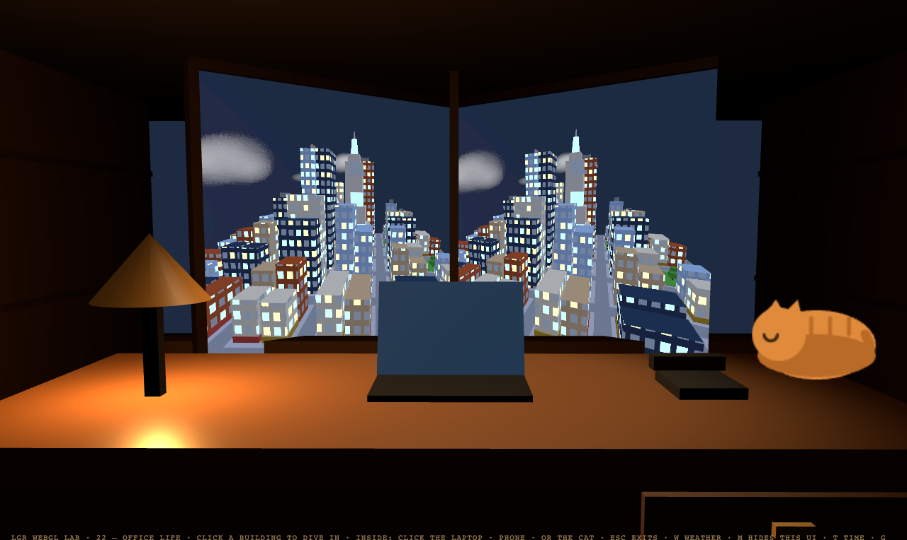
Inside, at night — the skyline glows through the glass and the cat is
curled up asleep on the desk. The city out the window is the real engine, rendered live.
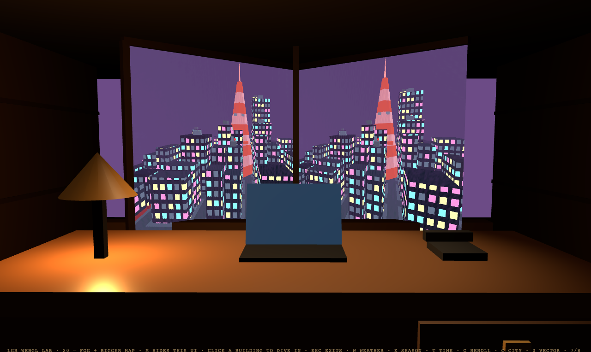
Weather, from inside — fog rolls across the skyline beyond the glass
while the room stays warm and lit.
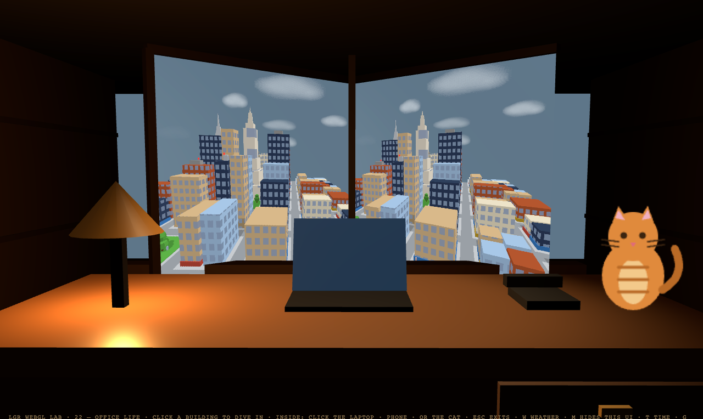
By day — clouds drift over a sunny skyline, the cat's awake on the desk,
and the laptop and phone are right there to use.
Any art style, instantly
The same scene, re-skinned in real time. The art direction is rules in
the engine — palette, shading, line work — so everything stays consistent. And it follows the
camera: zoom out and the whole city morphs through smooth cartoon → 16-bit → 8-bit → Game Boy,
then back as you zoom in. Concept art in, game-ready style out.
Zoom to pixel-art — one continuous zoom: the living city resolves from a
smooth cartoon look all the way down to four-shade Game Boy, the art style tracking the camera.
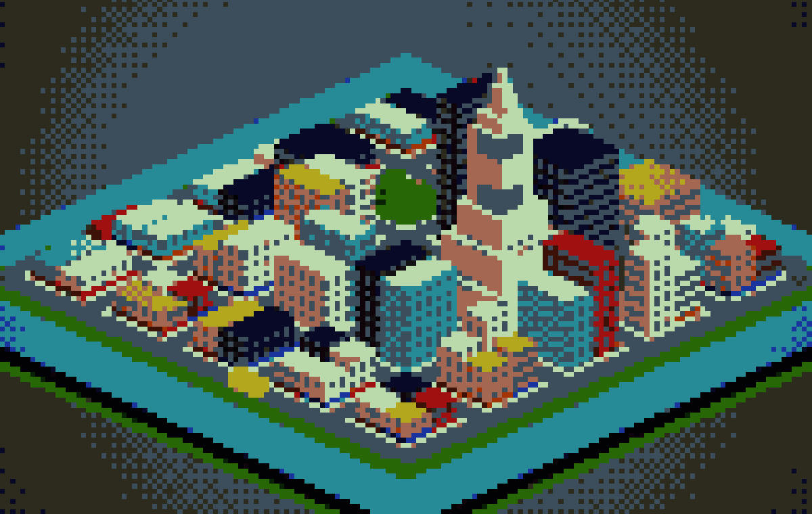
8-bit pixel art — a curated retro palette, crisp dithering.
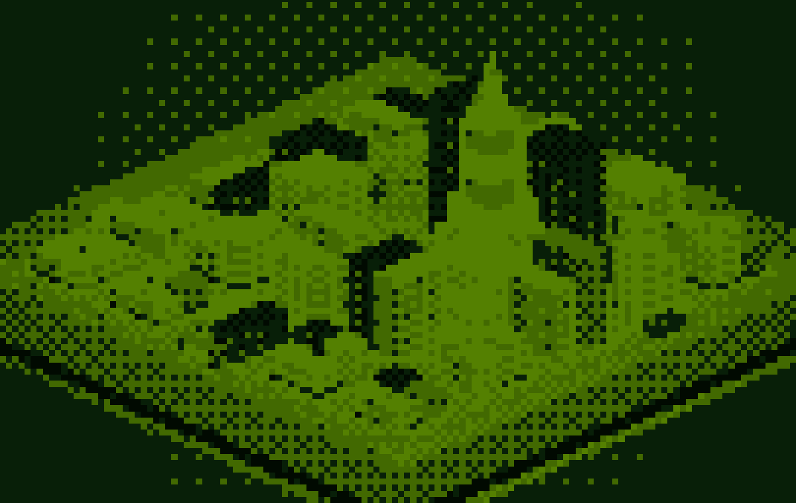
Game Boy — four shades, maximum nostalgia. Pick your bit-era.
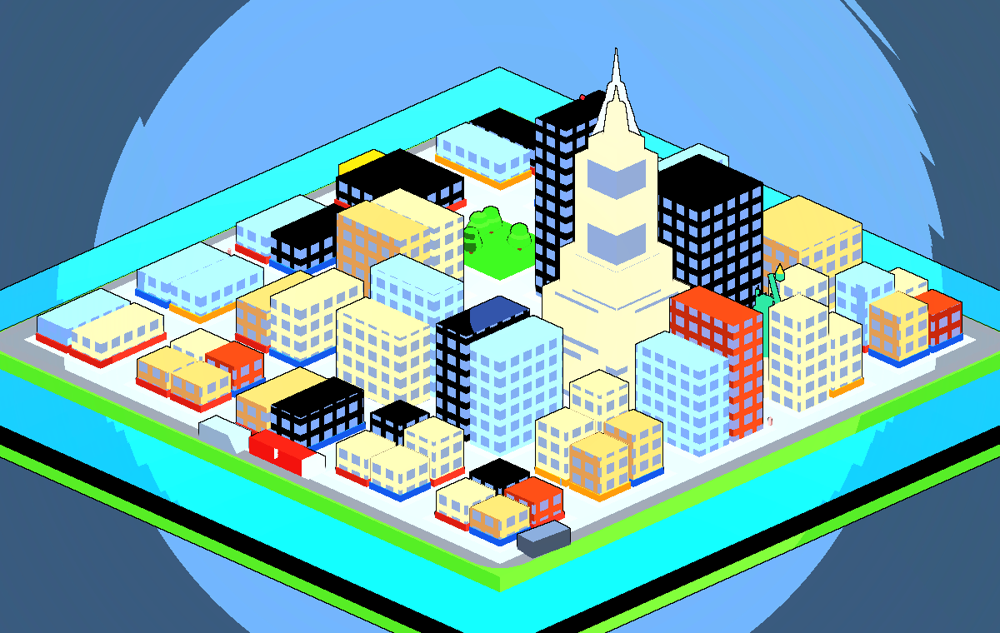
Cartoon — flat cel shading with clean ink outlines.
What this could do for a game
A signature look, consistently. Palette, shading and line work
are engine rules — every building, vehicle and screen matches.
A city that feels alive. Day/night, rush hours, lit windows,
ambient traffic, water that reacts to touch — atmosphere a static map can't give.
Concept art in, game assets out. A tool turns any image into
palette-consistent pixel art at a chosen bit-era, exporting game-ready files.
Any city, any style. Generated districts with real landmarks,
from one seed — every city a shareable address.
What's coming next
Boats and marine life on the water — wakes that ripple the real simulation
The signature zoom-to-pixel-art style morph, sharpened so it reads at a glance
An art tool that turns any concept image into matching, game-ready style
Everything above runs in a browser at 120 fps. If any of this looks
useful for your project, let's talk — it's built to be adapted.